June 2026
The Best Shopping Mall in Kota Kinabalu: Imago
If someone asks me where to go shopping in KK, I don't even have to think about it. Imago. Every time.

I've been going here since it opened in 2015 and it's still my go-to. Clean, bright, well maintained, and there's always something going on. If you're visiting KK and you want one mall that covers everything, this is the one.
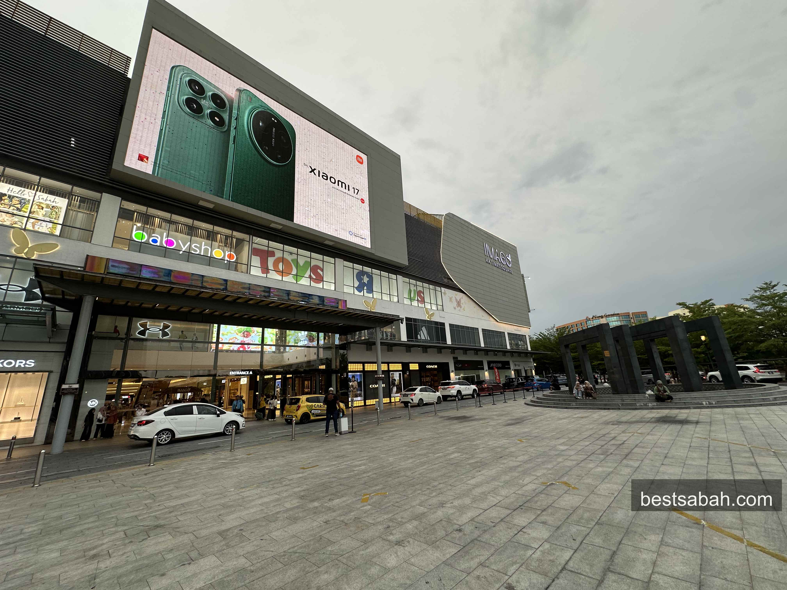
Right off the Coastal Highway. Hard to miss.
Where It Is
Imago is located at KK Times Square, right off the Coastal Highway. It's about 10 to 15 minutes from the city center depending on traffic. Easy to find, and there's a huge parking lot. Parking is almost never a problem here, which is something you genuinely appreciate in KK.
Address: KK Times Square, Phase 2, Off Coastal Highway, 88100 Kota Kinabalu, Sabah
Hours: 10am to 10pm daily
Phone: 088-275 888
Website: imago.my
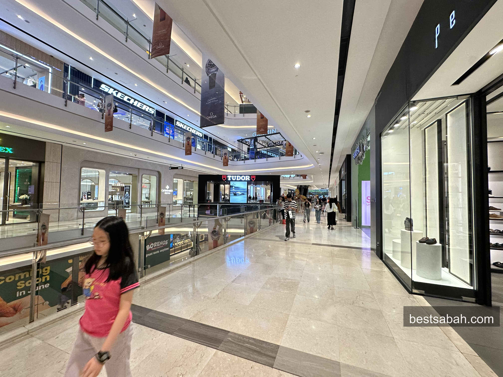
Ground floor. Bright, open, easy to navigate.
The Vibe
This is the thing that keeps me coming back. Imago just feels good to be in.
The mall is bright and open. The floors are clean. The air conditioning is cold without being ridiculous. The layout makes sense. You don't get lost, you don't feel cramped, and it never feels neglected the way some older malls do.
The atrium in the middle is used for events regularly. There are performances, seasonal decorations, promotions. Sometimes you walk in and there's a whole setup in the center for Kaamatan or Chinese New Year. They also run a welcome troupe with traditional Magunatip bamboo dance performances daily at the atrium, which is a nice touch especially if you're visiting from outside Sabah.
And if you spend RM50 or more, keep your receipt. They run mall-wide promotions where you can use your receipts to join lucky draws or events in the center. Worth paying attention to.
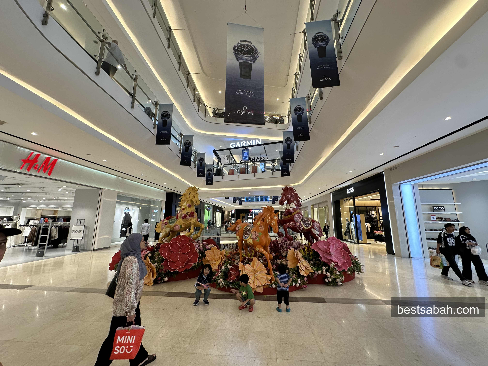
They go all out for festive seasons. Always something in the atrium.
Shopping
Imago has a solid spread of brands. Not ultra-luxury like KLCC, but everything you'd actually want to buy.
Fashion: Victoria's Secret, Coach, Michael Kors, Braun Buffel, Bonia, Carlo Rino, Christy Ng, Levi's, Uniqlo, Brands Outlet, and more.
Sports and lifestyle: Adidas, Under Armour, Skechers, New Balance, Puma, Converse.
Watches and jewellery: Cortina Watch with Longines, Fossil, Pandora, HABIB.
Beauty: Godiva, The Body Shop, and a range of beauty and wellness stores.
Tech: Sony, Top Smart, various telecom outlets.
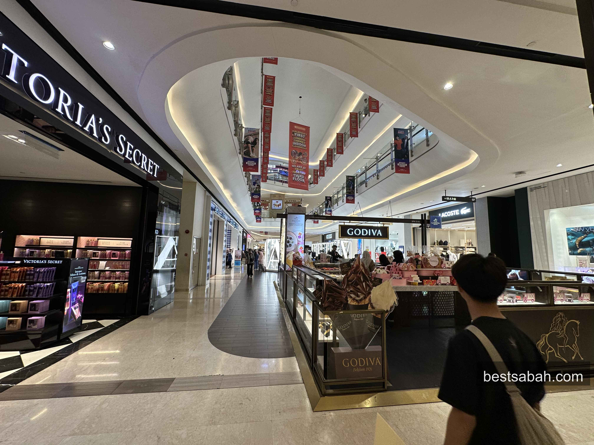
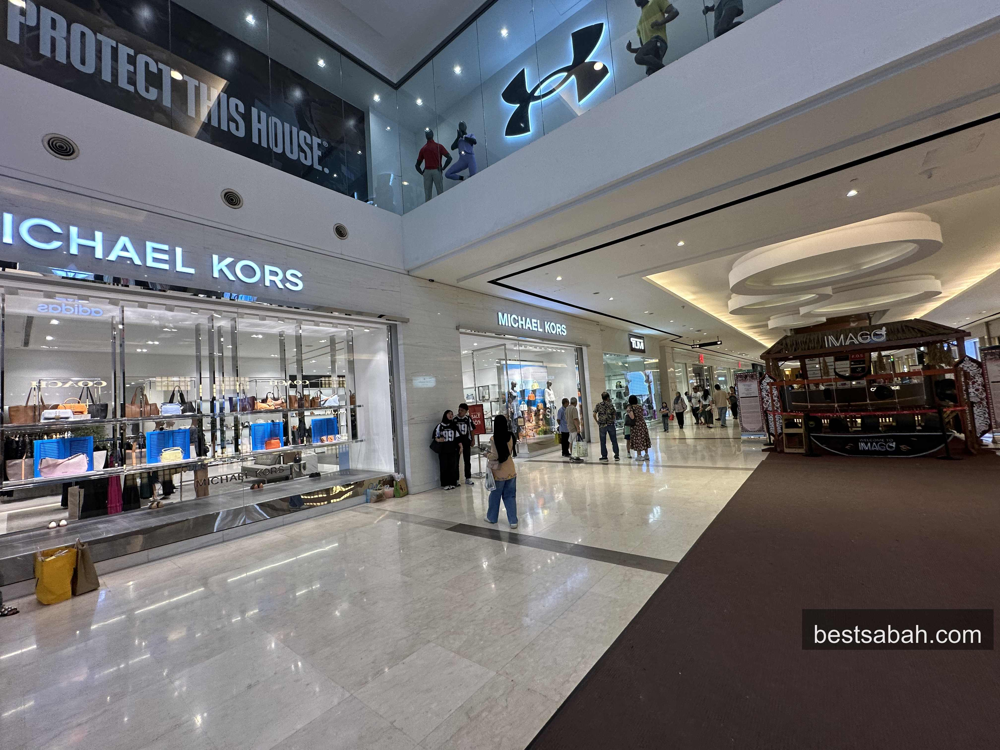
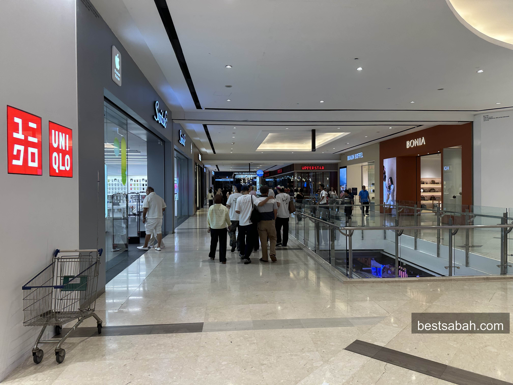
Uniqlo is here. Big store, well stocked.
It's a good mix. You can walk in needing a new pair of shoes, a bag, a watch, and a bottle of perfume, and walk out sorted. Prices are fair. Nothing feels overpriced for what it is.
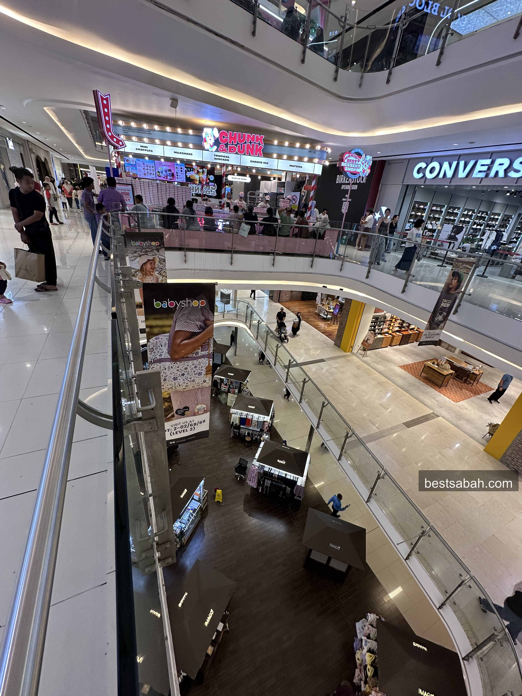
Food and Drinks
The basement is where the food is and there is a lot of it.
You've got a proper food street with local and international options. The Chicken Rice Shop, Jollibee, and a whole corridor of restaurants and stalls covering everything from local rice dishes to fast food to sit-down dining. Whatever you're in the mood for, something down here will cover it.
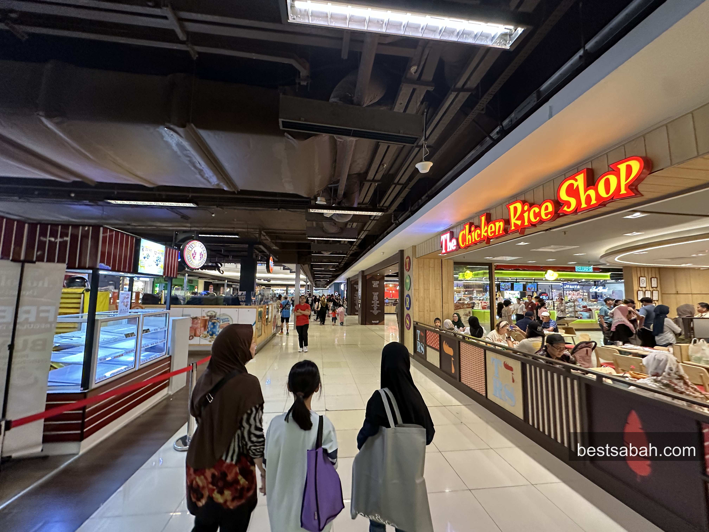
Basement food street. A lot of options packed in here.
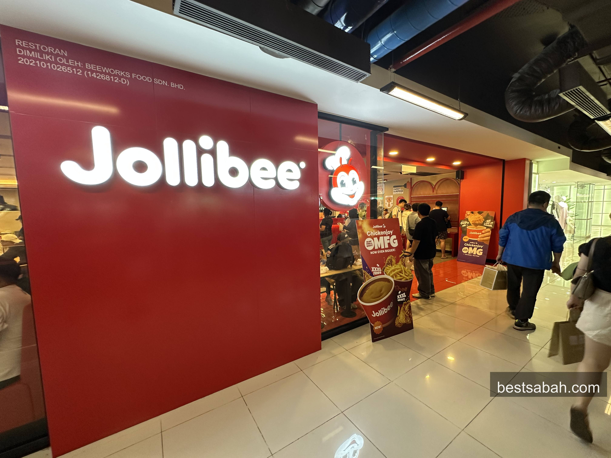
Jollibee. Go for the Chickenjoy. Go early on weekends.
Jollibee being here is worth mentioning specifically. If you've never tried it, it's a Filipino fast food chain that's huge across Southeast Asia. The fried chicken and Chickenjoy are genuinely good. Long queues on weekends, so go early or go late.
There are also sit-down restaurants on the upper floors for something more proper.
Other Stuff
Cinema: there's a cinema in the mall for when you just want to sit in the cold and watch something.
Kids: Toys R Us is here, plus kids wear stores and a dedicated kids play area.
Supermarket: Everrise supermarket is in the mall for groceries.
Facilities: wheelchair access, baby stroller service, prayer rooms, nursing room, luggage storage, charging stations, tourist information counter. They thought about it properly.
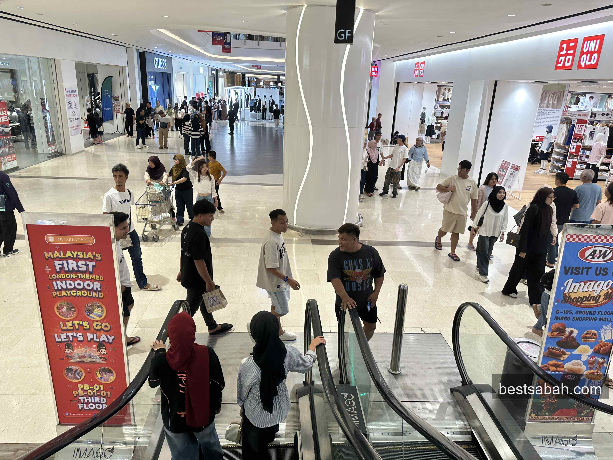
Weekend afternoons get busy. Go on a weekday if you can.
There's also an official Imago app if you want to browse stores, check promotions, or find out what events are on before you go.
Practical Info
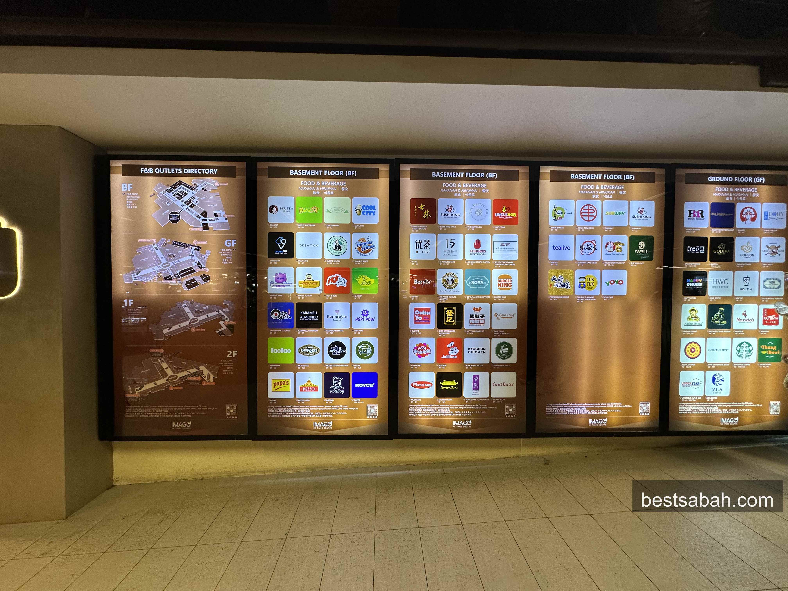
Getting there: Off Coastal Highway, KK Times Square. Waze or Google Maps to "Imago Shopping Mall" and you'll be fine.
Parking: Huge parking lot, multiple levels. Almost always available. Free for the first couple of hours in some zones, check the rates at the machine.
Hours: 10am to 10pm daily.
Best time to go: Weekday afternoons are the quietest. Saturday evenings get busy. Sunday is peak.
Clean. Well managed. Great brands. Good food. Always something happening.
Imago is the answer when someone asks where to go shopping in KK. Has been since 2015. Still is.